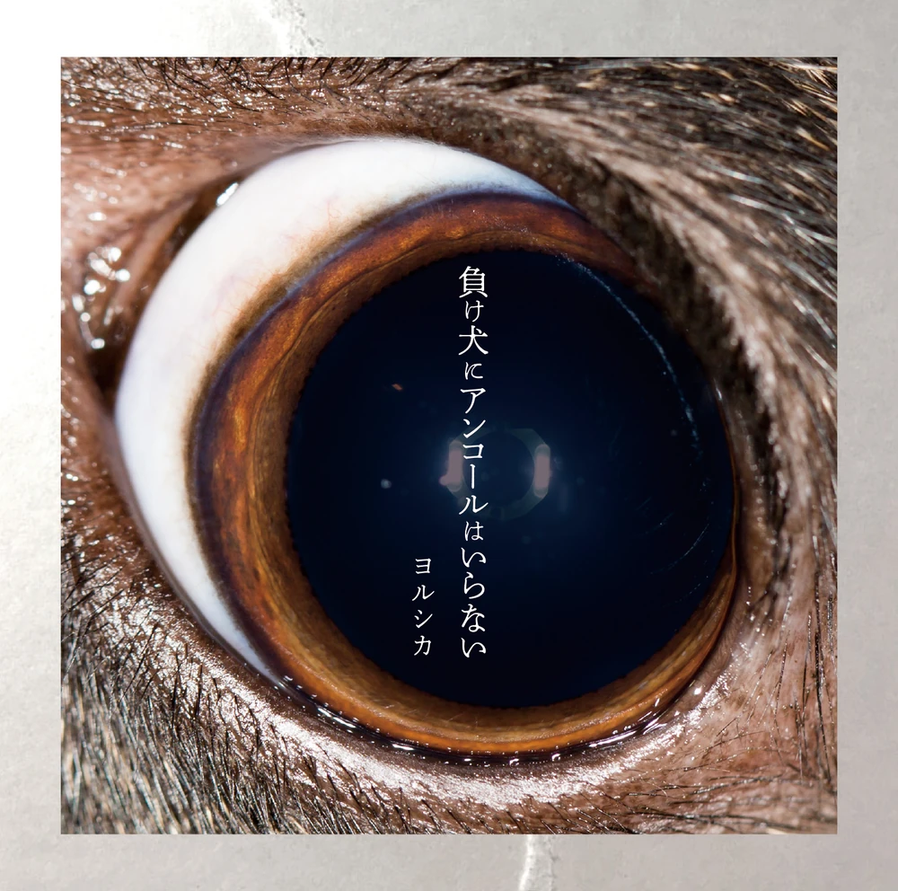

Extended Plays
Summer Grass (2017)
| General Information | |
|---|---|
| Native Title: | 夏草が邪魔をする |
| Romaji: | Natsukusa ga Jama wo Suru |
| English Translation: | Summer Grass |
| Release Date: | 2017 June 28 |
| Duration: | 24:52 |
- Playing Piano in the Shadow of Summer (夏陰、ピアノを弾く)
- Cattleya (カトレア)
- Say It. (言って。)
- Blooming in That Summer (あの夏に咲け)
- Flying Free (飛行)
- Fireworks of Shoes (靴の花火)
- Ghost (雲と幽霊)
Underdog (2018)
| General Information | |
|---|---|
| Native Title: | 負け犬にアンコールはいらない |
| Romaji: | Makeinu ni Ankouru wa Iranai |
| English Translation: | Underdog |
| Release Date: | 2018 May 9 |
| Duration: | 28:45 |
- Previous Life (前世)
- Underdog (負け犬にアンコールはいらない)
- Bomber (爆弾魔)
- Hitchcock (ヒッチコック)
- Falling (落下)
- Semi-Transparent Boy (準透明少年)
- Cloudless (ただ君に晴れ)
- Hibernation (冬眠)
- Summer, Bus Stop, Waiting for You (夏、バス停、君を待つ)
Creation (2021)
| General Information | |
|---|---|
| Native Title: | 創作 |
| Romaji: | Sousaku |
| English Translation: | Creation |
| Release Date: | 2021 January 27 |
| Duration: | 18:50 |
- Robber And Bouquet (強盗と花束)
- Spring Thief (春泥棒)
- Creation (創作)
- Eat the Wind (風を食む)
- Liar (嘘月)